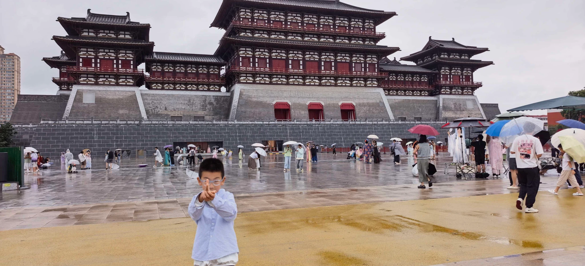
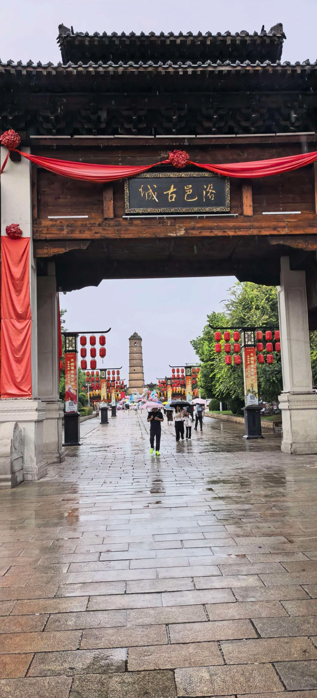
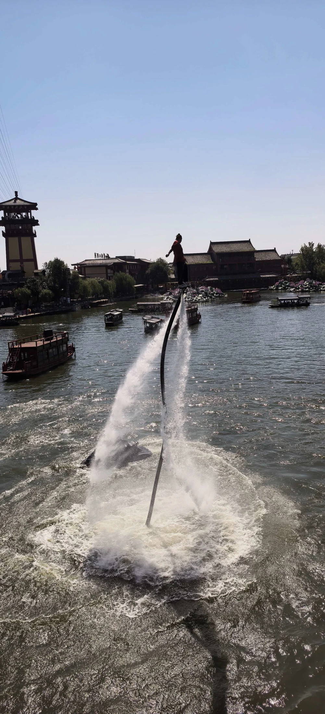
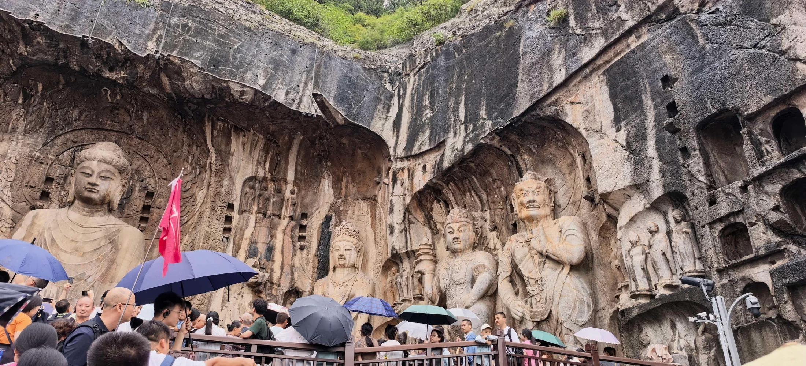
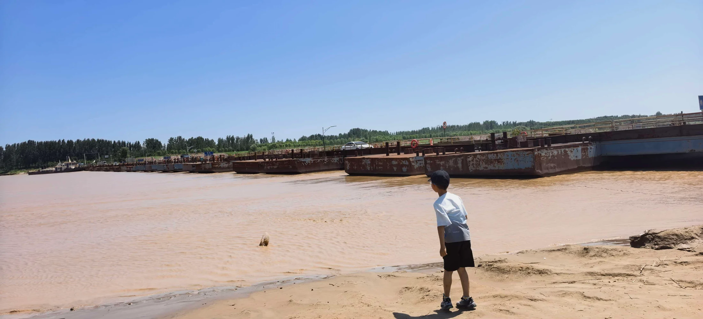
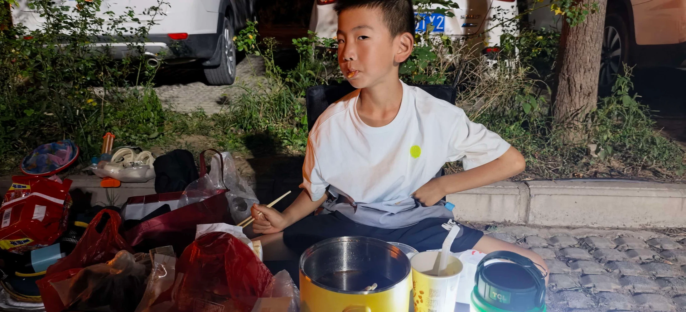
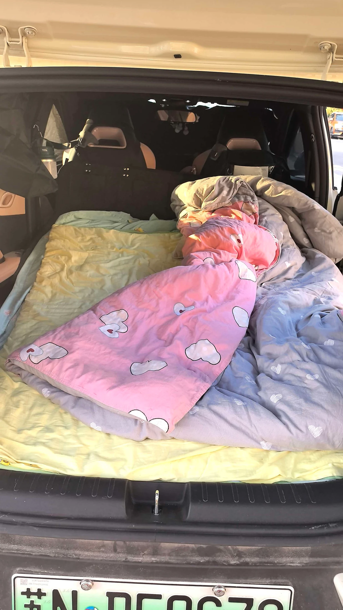
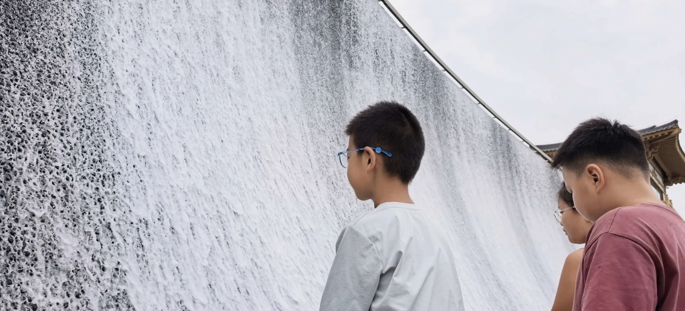
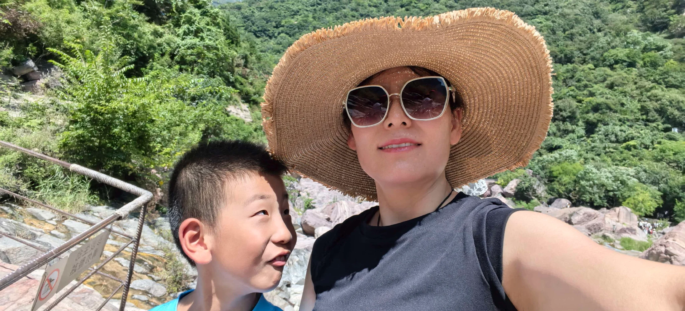

豫见自在出发
沿途都是风景
沿途都是风景
SCROLL TO WANDER
一次不赶路的出发
路书写在风里，
回忆留在镜头里。
商丘的烟火、开封的盛景、洛阳的千年石刻、奔涌的黄河与宝泉的清凉山水——这趟旅程没有标准答案，只有一家人边走边看的从容。
6段旅途记忆
60张精选影像
1车欢声笑语
ROAD MAP
沿着河南，慢慢走
从城市烟火到山河旷野，一条有历史、有味道、也有露营星光的路线。
01 / 商丘 · 味觉起点
十块钱，
盛满一大碗满足
中午在商丘停一脚。牛肉板面只要 10 元一份，分量实在，面条裹着汤汁，简单却很对胃口。自驾路上的好味道，往往就藏在这样的小店里。
“量大，味道不错。”路上的第一课
不必每一餐都做攻略。顺着香气拐进一家小店，也许就是整趟旅程最鲜活的开场。
午间停靠 · 补充能量 · 继续向西

02 / 开封 · 一梦千年
一场雨，
走进画里的汴京
城楼、街巷、游船和热闹的市井，把《清明上河图》一点点铺开。雨水让青砖更亮，也让这座园子多了几分穿越时空的氛围。
雨天也有雨天的景色
檐下躲一阵雨，听一段叫卖，看水面被雨点打亮。行程慢下来，古城反而离我们更近。
适合慢走 · 随时看演出 · 留意石板路
03 / 洛阳 · 石壁上的时间
抬头看见，
千年的目光
伊河两岸，石窟沿山壁铺陈。佛像的轮廓在风雨中依然沉静，走近时才真正感受到尺度与时间的重量。
龙门石窟 山、水、历史在这里相遇把脚步交给伊河
从桥上远望，再沿崖壁慢慢靠近。远景看气势，近处看衣纹与微笑，千年光阴就藏在这些细节里。
轻装步行 · 仰望石刻 · 记得带水
04 / 盛鑫浮桥 · 黄河岸边
风很大，
河水一直向前
站在盛鑫浮桥边，黄河的颜色与想象中一样厚重。岸边踩水、迎风、远望，宽阔的河面让赶路的心也慢了下来。
让风吹一会儿，再继续出发。河岸边的留白时刻
不安排景点，也不计算时间。只是站在大河面前，看浮桥、听风声，让辽阔替旅途换一次呼吸。
岸边风大 · 注意脚下 · 远离深水

05 / 宝泉 P1 · 停车露营
把车停好，
今晚住进旅途里
P1 停车场成了临时营地。开火、吃饭、整理床铺，简简单单的夜晚反而最有自驾的味道。车外是山风，车内是一家人的小天地。
⛺ 车边露营🍜 自己开火🌙 枕着山风
停车之后，生活开始
一盏灯、一锅热饭、一床软被，就能把陌生的停车场变成临时的家。明早推开车门，山谷就在眼前。
收好明火 · 保持安静 · 带走垃圾
06 / 宝泉大峡谷 · 清凉收尾
走进瀑布，
把八月过成清凉
山谷里水声不断，碧潭、层瀑和红色岩壁一路展开。孩子玩水，大人看山；被阳光晒热的夏天，在这里终于降了温。
看看峡谷里的更多瞬间 →山谷里的夏日答案
把鞋踩进清水里，让瀑布声盖过城市的喧闹。旅行不一定要去很远，能一起快乐，就是最好的抵达。
防滑鞋更安心 · 玩水要看护 · 慢慢返程TRAVEL FRAMES
旅途相册
点击分类寻找一段记忆，点击照片可以全屏翻看。
ON THE ROAD
自驾手记
早点出发
暑期景区人多，早到既好停车，也能避开正午最晒的时段。
雨具随车
古城的雨和山里的天气都说变就变，轻便雨衣比雨伞更灵活。
露营留白
灯、充电设备、饮水和薄被带齐，剩下的就交给晚风。
玩水防滑
宝泉水边石面湿滑，穿防滑涉水鞋，孩子玩水时始终看护。
